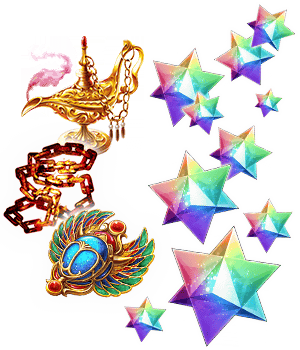
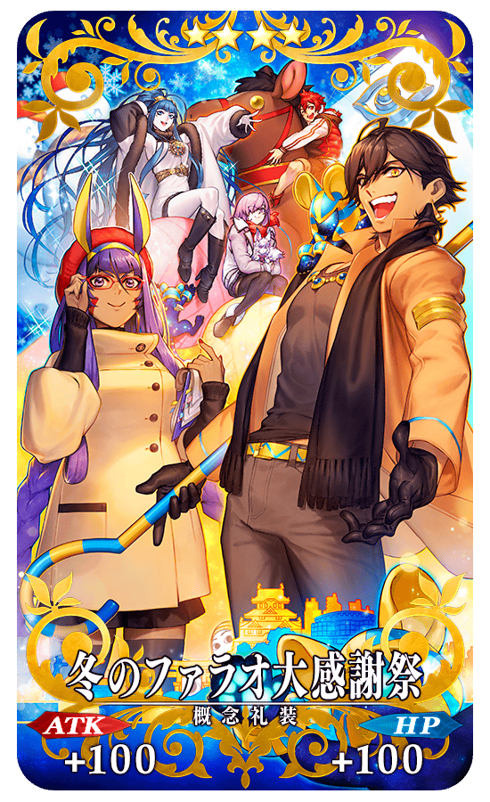
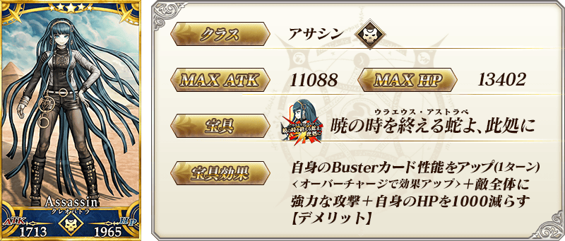
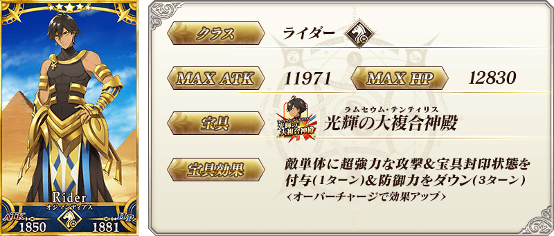
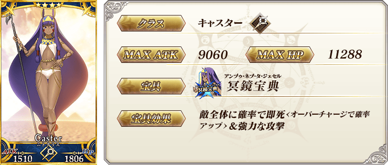
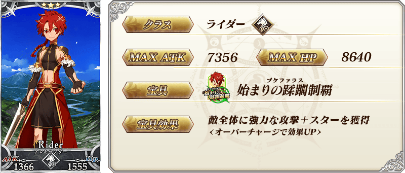
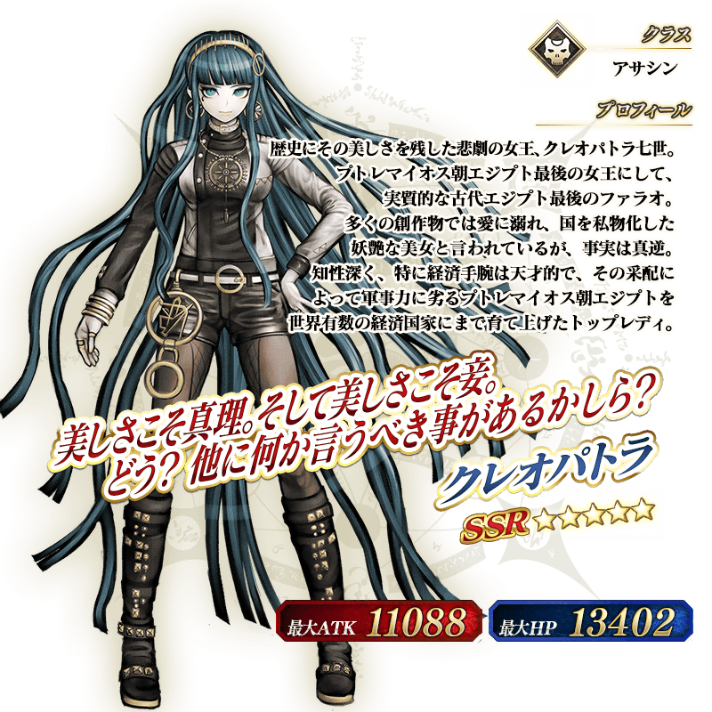

「FGO冬祭 2017-2018 ～冬之法老大感謝祭～」的舉辦還剩下2月24日(六)舉辦的廣島會場與3月4日(日)舉辦的大分會場。
為了讓多虧各位而大盛況不斷的冬祭更加高漲，實施「FGO冬祭 2017-2018 ～冬之法老大感謝祭～舉辦記念宣傳活動」！
另外，在官方推特會刊載「FGO冬祭 2017-2018 ～冬之法老大感謝祭～」的活動情報等。
當天蒞臨會場的玩家或無法前來會場的玩家，都能藉在舞台活動に不斷發表的新情報，一起熱鬧起來吧！
Fate/Grand Order官方推特:@fgoproject
◆舉辦期間◆
2018年2月21日(三) 17:00～3月7日(三) 11:59
FGO冬祭 2017-2018 ～冬之法老大感謝祭～
官方網站:http://fes.fate-go.jp/winter/
※請注意「FGO冬祭 2017-2018 ～冬之法老大感謝祭～」廣島、大分會場的門票事前抽選應募皆已結束。不會有門票的當天配發。
在下述的期間中10天內連續登入的話，贈送合計聖晶石10個等！
|
◆舉辦期間◆ ◆贈送對象◆
※請注意舉辦記念連續登入入獎勵的領取必須在3月4日(日) AM2:59前通過「特異點F 炎上汙染都市 冬木」。 |
 |
| 連續登入天數 | 贈送內容 | |
|---|---|---|
| 第1天 | 聖晶石 1個 愚者之鎖 1個 | |
| 第2天 | 聖晶石 1個 愚者之鎖 1個 | |
| 第3天 | 聖晶石 1個 愚者之鎖 1個 | |
| 第4天 | 聖晶石 1個 愚者之鎖 1個 | |
| 第5天 | 聖晶石 1個 愚者之鎖 1個 | |
| 第6天 | 聖晶石 1個 愚者之鎖 1個 | |
| 第7天 | 聖晶石 1個 愚者之鎖 1個 | |
| 第8天 | 聖晶石 1個 封魔之燈 1個 | |
| 第9天 | 聖晶石 1個 封魔之燈 1個 | |
| 第10天 | 聖晶石 1個 智慧之聖甲蟲像 1個 | |
※第1天的登入獎勵會從2月23日(五) AM3:00配發。
※之後的登入獎勵會在每天AM3:00配發。
※連續登入天數中斷的話，無法領取之後的禮物。
※最多能領取10次，但根據開始遊戲的時間點，可能無法到此上限。
在迦勒底之門，通過下述的期間中出現的「FGO冬祭 2017-2018 ～冬之法老大感謝祭～」舉辦記念關卡，得到關卡限定的概念禮裝吧！
※請注意「FGO冬祭 2017-2018 ～冬之法老大感謝祭～」舉辦記念關卡並無冒險部份。
◆舉辦期間◆
2018年2月21日(三) 17:00～3月7日(三) 11:59
◆關卡開放條件◆
通過「特異點F 炎上汙染都市 冬木」的Master對象
◆「FGO冬祭 2017-2018 ～冬之法老大感謝祭～」舉辦記念關卡限定概念禮裝◆
|  |
★★★★SR |
◆「FGO冬祭 2017-2018 ～冬之法老大感謝祭～舉辦記念Pick Up召喚(每日交替)」期間◆
期間:2018年2月21日(三) 17:00～3月7日(三) 11:59
舉辦期間限定「FGO冬祭 2017-2018 ～冬之法老大感謝祭～舉辦記念Pick Up召喚(每日交替)」！
「★5(SSR)克麗奧佩脫拉」以期間限定登場！
在「FGO冬祭 2017-2018 ～冬之法老大感謝祭～」主視覺圖所繪製的「★5(SSR)克麗奧佩脫拉」「★5(SSR)奧茲曼迪亞斯」以每日交替Pick Up，「★4(SR)尼托克里絲(Caster)」「★3(R)亞歷山大」常駐Pick Up。
※克麗奧佩脫拉在Pick Up期間結束後不會追加到故事召喚。
※奧茲曼迪亞斯、尼托克里絲(Caster)、亞歷山大在Pick Up期間結束後仍會在故事召喚被抽出。
詳情請在聖晶石召喚畫面左下的召喚詳細確認。
Pick Up期間中，期間限定Servant、Pick Up Servant的出現機率提升！
10次召喚中確定1張★4(SR)以上和確定1位★3(R)以上的Servant！
※確定★4(SR)以上包含Servant和概念禮裝。
※所謂「出現機率提升」意指比同稀有度的Servant及概念禮裝出現機率更高的設定。
| 每日交替Pick Up期間 | 每日交替Pick Up內容 |
|---|---|
| 2月21日(三) 17:00～ 2月23日(五) 22:59 |
克麗奧佩脫拉 奧茲曼迪亞斯 |
| 2月23日(五) 23:00～2月24日(六) 22:59 | 奧茲曼迪亞斯 |
| 2月24日(六) 23:00～2月25日(日) 22:59 | 克麗奧佩脫拉 |
| 2月25日(日) 23:00～2月26日(一) 22:59 | 奧茲曼迪亞斯 |
| 2月26日(一) 23:00～2月27日(二) 22:59 | 克麗奧佩脫拉 |
| 2月27日(二) 23:00～ 3月1日(四) 22:59 |
克麗奧佩脫拉 奧茲曼迪亞斯 |
| 3月1日(四) 23:00～3月2日(五) 22:59 | 奧茲曼迪亞斯 |
| 3月2日(五) 23:00～3月3日(六) 22:59 | 克麗奧佩脫拉 |
| 3月3日(六) 23:00～3月4日(日) 22:59 | 奧茲曼迪亞斯 |
| 3月4日(日) 23:00～3月5日(一) 22:59 | 克麗奧佩脫拉 |
| 3月5日(一) 23:00～ 3月7日(三) 11:59 |
克麗奧佩脫拉 奧茲曼迪亞斯 |
※請注意會以每日交替變更Pick Up的Servant。
介紹克麗奧佩脫拉、奧茲曼迪亞斯的寶具演出！
在「Fate/Grand Order」官方網站內的公告中，公開了「★5(SSR)克麗奧佩脫拉」「★5(SSR)奧茲曼迪亞斯」的寶具演出。敬請確認。





